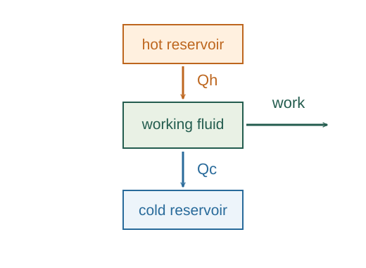
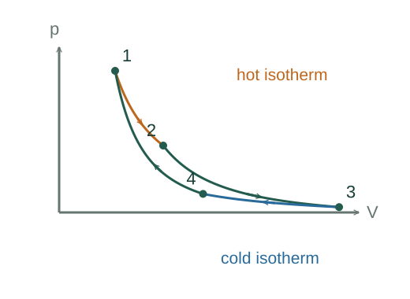

Why the reversible Clausius cyclic integral is zero
A reversible engine heat ratio, the second law, and a reversible subdivision argument establish that δQrev/T has zero cyclic integral. Only after this theorem can it define a path-independent entropy difference.
What the symbols mean
Qi: signed heat entering a cyclic device from reservoir i at Ti; T₀: chosen reference-reservoir temperature; Q₀: net heat absorbed from that reference reservoir.
When this applies
Reversible engines, positive absolute reservoir temperatures, energy conservation, the Kelvin–Planck statement of the second law, and a quasistatic limit for continuously varying temperature.
Why a reversible cycle gives zero
We want to prove the zero cyclic integral before using it to define entropy. The strategy is to connect a reversible cycle to one reference reservoir. If the heat-over-temperature sum were nonzero, the combined device—or the same device run backward—would convert heat from that single reservoir entirely into work.

Reversibility fixes the heat ratio
Suppose two reversible engines between the same reservoirs had different efficiencies. Scale their work equally, run the more efficient forward and the other backward. Their works cancel, leaving heat transferred from cold to hot with no work. Coupling this to an ordinary engine would violate the Kelvin–Planck statement. Therefore all reversible engines between the same temperatures have the same heat ratio.
Reversibility matters because either engine can be run backward without leaving other changes behind. That lets us compare them as parts of one cyclic device and apply the second law to its net effect.
An ideal-gas engine identifies that ratio
The ideal-gas Carnot construction gives |Qc|/Qh = Tc/Th without an entropy assumption. Universality then extends the ratio to every reversible engine. Equivalently, this relation defines the absolute thermodynamic temperature scale.
The cold heat is signed negative in this equation. The cancellation is the Carnot heat ratio written as a sum of signed heat-over-temperature contributions.

Replace many reservoir exchanges by one
For a reversible cyclic device absorbing signed Qi from reservoir Ti, attach a reversible auxiliary engine that absorbs −Qi from that same reservoir. The ratio theorem requires it to absorb +QiT₀/Ti from a single reference reservoir at T₀. All nonreference exchanges cancel.
At each original reservoir, the auxiliary engine exactly cancels the heat exchanged by the device. The remaining exchanges all occur with the reference reservoir, so they can be added into one net heat.
Neither sign of a nonzero sum is possible
The combined assembly is cyclic, so its internal energy has no net change. Any net heat absorbed from the sole remaining reservoir would therefore appear entirely as work. The Kelvin–Planck statement forbids that result.
A net heat release cannot escape the argument: because the assembly is reversible, running it backward would produce the forbidden complete conversion. The only possible net reference heat is zero, which forces the original sum to vanish.
Let the reservoir steps become continuous
Subdivide a quasistatic reversible cycle into increasingly small heat transfers, each at the instantaneous system temperature matched to its reservoir. The sum tends to the cyclic integral.
In the reversible limit, the reservoir temperature at each exchange matches the system temperature. Refining the subdivision turns the heat-over-temperature sum into the closed integral.
A closer lookHow does a sum become an integral? ↗Why an integral accumulates a rateThe theorem now permits an entropy definition
Two reversible paths between the same endpoints make a reversible closed cycle when one is reversed. The zero-integral theorem shows that their integrals agree, so the common endpoint difference can be named entropy change.
The reasoning has a definite order: the second law constrains reversible engines, the engines establish the cyclic equality, and that equality makes an entropy difference independent of the reversible path chosen.
A closer lookUse this result to define and calculate entropy ↗Why entropy uses δQrev/TA worked example
For a reversible cycle exchanging +600 J at 600 K and −300 J at 300 K, the sum is 600/600 − 300/300 = 0 J/K. The net work is 300 J.
Derivation behind this calculation ↗A point to keep straight
Reversibility is essential to the equality. For an arbitrary cycle, Clausius’s inequality uses boundary reservoir temperatures and gives ∮δQ/T ≤ 0.
Check the assumptions and derivation ↗